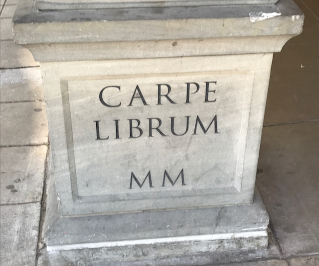

A few days ago, while I was still in Portland, OR enjoying the last few days of PyCon 2017, Renee (@BecomingDataSci) mentioned on Twitter that she might bring back the “Summer of Data Science” she kicked off last year.
In short: use the summer as an opportunity to learn and/or accomplish something data science-related in a goal-oriented, data-driven way.
As a tenure-track professor still yet to endure the 3rd-year review, pretty much everything data science related revolves around furthering my eventual tenure dossier. But the summers are still considerably more flexible for me to accomplish some of these goals than the fall or spring (I love teaching, but it’s all-consuming). I also have more than just myself–networks of collaborators and research assistants who can help me with these goals.
So without further adieu, I’d like to put forth my own Summer of Data Science, 2017 Edition:
Teaching: 1360E improvements and 4360/6360 preparation
I’m teaching an online course this summer, starting June 5 and continuing through the end of July: CSCI 1360E Foundations of Informatics and Analytics.
Or, more colloquially, I just call it “introduction to data science.”
It’s one of the five courses I proposed in my first year (a story for another time, believe me…) and taught for the first time last summer, and in-person last fall. I’m teaching it again this summer and hoping to make some of the standard improvements, such as sprucing up slides and fixing autograder bugs from previous incarnations.
More pressing is CSCI 4360/6360 Data Science II, which has yet to have its own website. This course has never been taught, but is slated for Fall 2017.
Did I mention there are already over 40 students registered, undergraduate and graduate combined?
This is supposed to be the “corner cases” of data science: lesser-used and/or more powerful analysis methods that aren’t necessarily the first tools or techniques you reach for in a given situation. This will include, but certainly not be limited to, concepts like randomized algorithms, semi-supervised learning, and backpropagation; techniques like out-of-core processing, distributed computing, and functional programming; tools like Julia, numba, and dask.
Before you ask: No. I’m not covering Spark.
At any rate, the conceptual framework is in place, but practically none of the architectural logistics have been established. So this will take up virtually all of my time for the remainder of the summer, once the following item is completed…
Research: NSF CAREER proposal
The advantage of this goal is it has a hard end date: July 19.
The disadvantage is that the NSF CAREER is the pinnacle of NSF early-career investigator awards. Its importance cannot be overstated; its je ne sais quoi is on display in the faces of new investigators when you mention it around them.
I’ve connected with my university’s grant proposal officers, and am participating in a peer review process that involves two rounds of review: first with fellow CAREER submitees (as in, we exchange each other’s current drafts!), and second with the university grant officers.
An investigator can only make three submission attempts for the CAREER. The CAREER is only open for submissions once per year. If chosen, the investigator must still be un-tenured at time of award. These conditions place brutal limits on how long you can wait to start making submissions, and I already skipped submitting my first two years. Still, I have no illusions about the uphill battle I have, so my goal this first time around is simply to acquire feedback: from my peers, from my grants officers, and from the NSF reviewers.
Personal: Coursera’s optimization course
I signed up to take Coursera’s Discrete Optimization course out of the University of Melbourne, taught by none other than Professor Pascal Van Hentenryck at Michigan and Dr. Carleton Coffrin, currently at Los Alamos.
Optimization is pretty much the backbone of modern machine learning, and yet I have almost no formal training in it–beyond incidentally covering it in various machine learning and statistics courses as part of some broader topic in which it’s used. Oddly, the most rigorous instruction I received as a graduate student in optimization was a Cell & Systems Modeling course where we used various optimization techniques to find parameter values for population models.
Especially in conjunction with what I hope to teach in CSCI 4360 in the fall, this would be invaluable both professionally as well as personally.